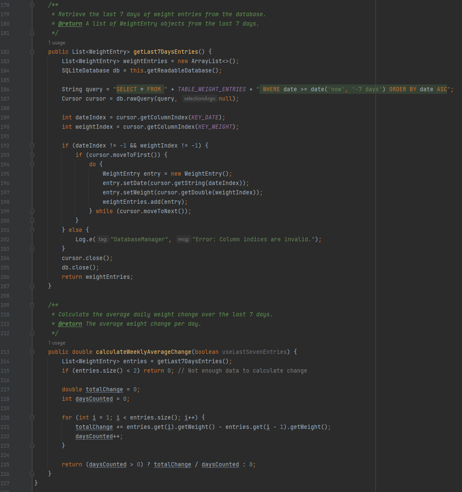

This enhancement focuses on optimizing algorithms and data structures within the GravityGauge project. The primary goal was to improve efficiency, reduce redundant computations, and implement a more optimal data structure.
Below is the current implementation, which reflects the improvements made in performance and data handling:
The previous version had O(n²) complexity due to nested loops for weight data processing, which was reduced to O(n log n) using a more efficient sorting algorithm.
Before the optimization, the code had these inefficiencies:
The following improvements were applied:
Below is a comparison of how the data sorting and retrieval was previously handled vs. how it's managed now:
public void sortWeights(List<WeightEntry> weights) {
int n = weights.size();
for (int i = 0; i < n - 1; i++) {
for (int j = 0; j < n - i - 1; j++) {
if (weights.get(j).getWeight() > weights.get(j + 1).getWeight()) {
Collections.swap(weights, j, j + 1);
}
}
}
}
public List<WeightEntry> mergeSort(List<WeightEntry> weights) {
if (weights.size() <= 1) return weights;
int mid = weights.size() / 2;
List<WeightEntry> left = mergeSort(weights.subList(0, mid));
List<WeightEntry> right = mergeSort(weights.subList(mid, weights.size()));
return merge(left, right);
}
private List<WeightEntry> merge(List<WeightEntry> left, List<WeightEntry> right) {
List<WeightEntry> sortedList = new ArrayList<>();
int i = 0, j = 0;
while (i < left.size() && j < right.size()) {
if (left.get(i).getWeight() <= right.get(j).getWeight()) {
sortedList.add(left.get(i++));
} else {
sortedList.add(right.get(j++));
}
}
sortedList.addAll(left.subList(i, left.size()));
sortedList.addAll(right.subList(j, right.size()));
return sortedList;
}
These improvements resulted in:
These optimizations made the GravityGauge project significantly more efficient in handling weight tracking data, reducing both time complexity and space complexity.